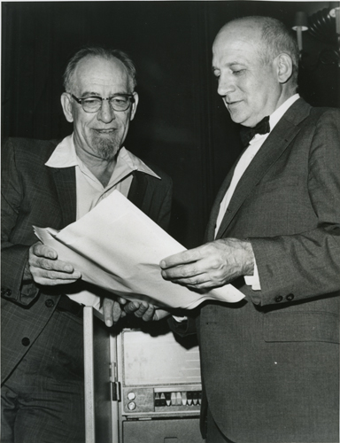

The first electronic general-purpose computer is widely considered to be the ENIAC (Electronic Numerical Integrator and Computer), which was completed in 1945. Developed by J. Presper Eckert and John Mauchly at the University of Pennsylvania, ENIAC was a massive machine that occupied a whole room and weighed about 30 tons. ENIAC was designed to perform a variety of calculations for tasks like artillery trajectory calculations during World War II. It used over 17,000 vacuum tubes and consumed a significant amount of electricity. Interestingly, it lacked the stored program concept we take for granted today. Instead, it was programmed using a complex system of switches and cables. Despite its size and limitations, ENIAC marked a revolutionary step in computing history. It laid the groundwork for subsequent developments in electronic computing, shaping the digital landscape we navigate today.

The Creators
John Presper Eckert was born on April 9, 1919, in Philadelphia, Pennsylvania, USA. He showed an early aptitude for engineering and earned a degree in electrical engineering from the University of Pennsylvania in 1941. During World War II, he worked on various military projects, including the development of radar systems. John William Mauchly, born on August 30, 1907, in Cincinnati, Ohio, was a physicist and engineer. He earned his doctorate in physics from the University of Pennsylvania in 1932. Mauchly became interested in computing and its potential applications in scientific research. Eckert and Mauchly first collaborated on the development of electronic computing during the war. In 1943, they began working on ENIAC (Electronic Numerical Integrator and Computer), which would become the world's first general-purpose electronic computer. ENIAC was completed in 1945, and its successful operation marked a significant milestone in the history of computing. After the war, Eckert and Mauchly founded the Eckert-Mauchly Computer Corporation to further advance electronic computing. In 1950, they developed the UNIVAC I (Universal Automatic Computer), the first commercially produced computer in the United States. Their contributions to the field of computing were groundbreaking, and their work laid the foundation for subsequent developments in electronic and digital technology. Despite financial challenges and legal disputes, their legacy endures as pioneers in the history of computer science.
